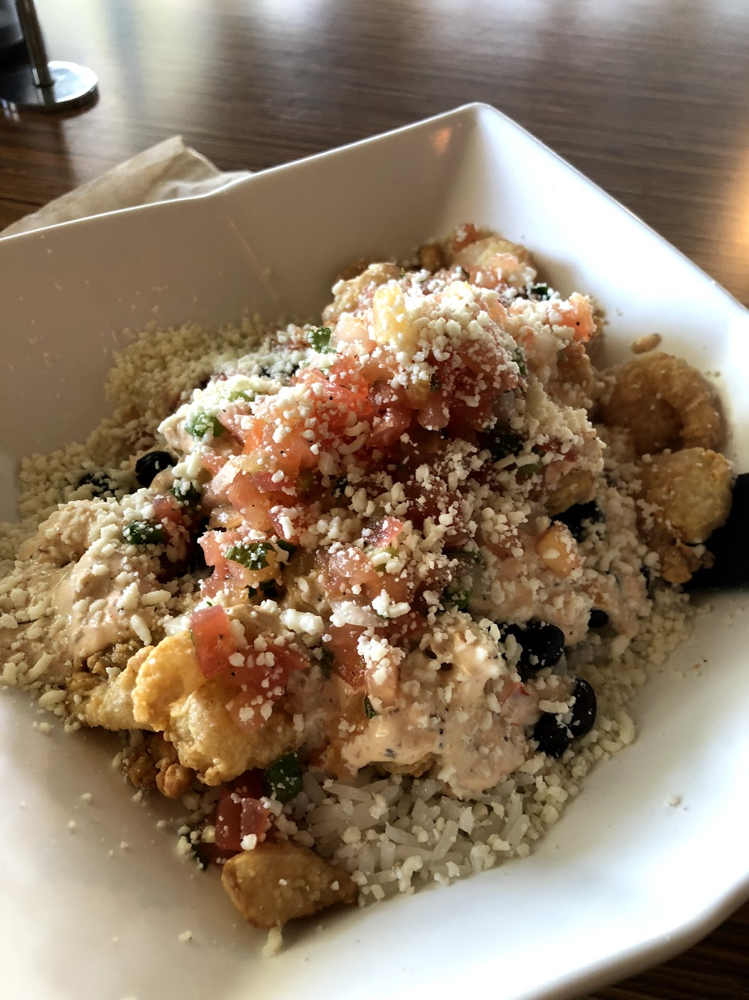
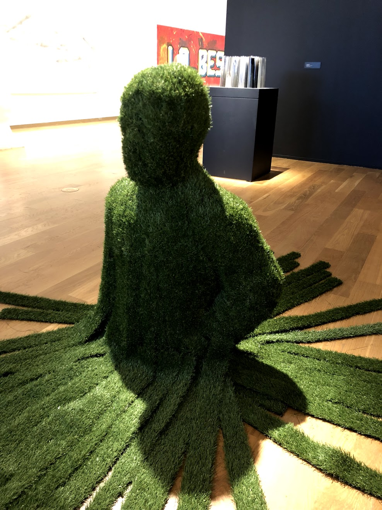
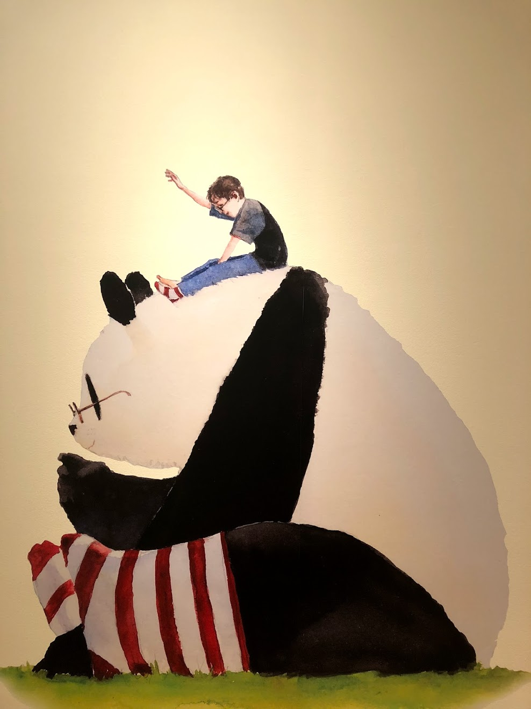
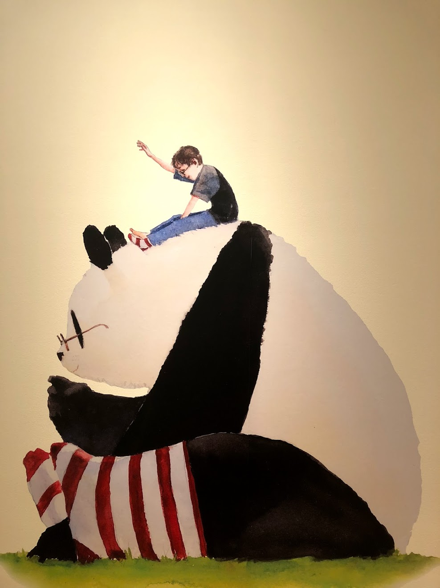

I haven't seen my boyfriend, Zach in I think an entire month? I'm not sure exactly when the last time I
saw him was but it's been a whooleeee minute. I'm terrible at buying gifts for him, but I'll also blame him
for not really wanting anything/his mom buys him everything anyways. The idea of me giving him just
Chic-Fil-A gift cards seemed really sad so I wanted to take him out so we could do things together. As two poor
college students we didn't do any super cool things but being able to hang out with him and doing things together was
enough for the both of us.
Our day consisted of eating, art, and floofers. We ate lunch at Jimmy Hulas! It was my first time eating there and
it was pretty good. I had a bowl with rice, beans and shrimp, and some sauce. The food was pretty good, not the best,
they put too much rice and not enough shrimp. They had these really good fries that I think had some kind of lemon spice
in it and let me tell you WHAT. Those fries were really good and super different compared to the other fries I've had.
We also went to the Orlando Museum of Art and if you're a student admissions were only $5!!! Super great for people on a budget. I really like art so we walked around and admired some of the artworks in the museum. We also were acting dumb
and making stupid jokes and memes. I wish the mueseum was one of those interactive ones where you're able to touch and
press things. Other than that, OMA is a nice place to go that is not very expensive. They also switch out the artworks so you don't see the same things everytime you visit.
We end the day with the best. THE FLOOFERS. We went to a dog store in downtown and held some puppies. However, I'm not sure if the store is really good. And when I mean good I mean, I'm really just questioning how they treat the puppies. I don't know where they go once the store closes. Buutttt....I also love puppies T.T So that was my day with Zach. So goood
to see him and be with him.
Date with Zach



 
